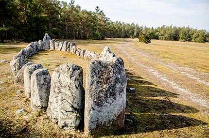
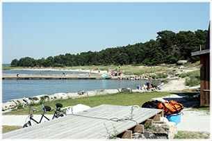

Vid normalvattendjup är djupet 3 meter i huvuddelen av hamnen. Vatten och el finns utdraget på kajerna.
I land kan vi erbjuda ett modernt servicehus med WC, dusch och tvättmaskin.
Ring gärna hamnfogden för att få reda på aktuellt läge.
Dygnshyra 150:- /dygn*
El-anslutning 50:-/dygn
*inkluderat kort för tillträde till servicehuset och 20:- för två duschar
Djupviks hamn ligger i den norra delen av Ekstakustens långa kuststräcka.
Söder om Djupvik hittar man flera besöksmål: Langsteitu med sitt fågelskyddsområde,
Kronvalls fiskeläge där Valdemar Atterdag enligt sägnerna landsteg 1361, det fyra långa Ekstakustens naturreservat,
Skansudd med Gotlands största kustartelleriskans byggd 1713 och Vavle fiskeläge med sin alltmer populära badstrand.
Hela området är otroligt vackert och inbjuder till härliga turer med bil, cykel eller till fots.
Man kan ta med egen picnic eller stanna till vid de olika kiosker och restauranger som finns vid de olika stränderna.
Att se sol gå ned vid Karlsöarna är ett måste!
Skeppssättning
En skeppssättning är en gravplats från yngre bronsåldern (1100-500 f Kr) och på Gotland kan du hitta 350 stycken skeppssättningar.
Denna som finns vid Djupvik, ovanför fiskeläget, är 13 meter lång och 4 meter bred och består av 20 stycken stenar.

Skeppsättningen i Djupvik
Skeppssättningen är alltså en gravplats för en person.
Personen som dött brändes på bål och sedan krossades och tvättades den dödes ben och lades i en lerkruka.
Krukan placerades sedan i en kista av stenhällar i eller intill skeppsättningen.
Badplatser
Utefter Ekstakusten där Djupviks fiskeläge ligger finns några badstränder. En av dem hittar du här i Djupvik.

Djupviks Strand, Foto: Bernt Enderborg
Hela området är otroligt vackert och inbjuder till härliga turer med bil, cykel eller till fots.
Man kan ta med egen picnic eller stanna till vid de olika kiosker och restauranger som finns vid de olika stränderna.
Öarna
Utanför Djupvik ser man Stora och Lilla Karlsö som båda är Sveriges enda fågelberg och man kan besöka båda under sommaren.
Båten utgår från Klintehamn och resan till Lilla Karlsö tar 20 minuter och till Stora Karlsö 30-40 minuter.
För tider och priser och mer information om öarna gå till deras hemsidor:
Lilla Karlsö och Stora Karlsö.